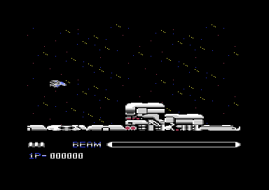
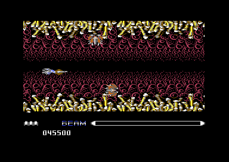

<meta charset="utf-8">
<meta name="viewport" content="width=device-width, initial-scale=1">
<title>{{title}}</title>
<link rel="preconnect" href="https://fonts.googleapis.com">
<link rel="stylesheet" href="https://fonts.googleapis.com/css2?family=Lato:wght@400;700;900&family=IBM+Plex+Mono:wght@400;500&display=swap">
<link rel="stylesheet" href="reference/r-type-page.css">
<!-- tabs -->
<header class="hero">
  <p class="eyebrow">{{platform}} · {{year}} · {{publisher}}</p>
  <h1>{{title}}</h1>
  <p class="sub">The ship, the beam, the Force and its three weapons, the lives, and the bosses: how each works, with the routines that run it.</p>
</header>
<main class="wrap">
<section id="ship" data-part="game">
  <p class="fig">The ship</p>
  <h2 class="t">Eight directions, five speeds</h2>
  <p class="lede">The ship is two sprites, one above the other, moved by the joystick in port 2 in eight directions. Its frame starts at <code>player_frame</code> (<code>$2821</code>), which reads the stick and jumps to one of eight movers (<code>stick_moves</code>, <code>$2CF7</code>).</p>
  <p>Pushing up or down tilts the ship as well as moving it: the sprites change to a climbing or diving pair and ease back to level when the stick is let go. The ship stays between lines <code>$32</code> and <code>$AF</code> of the screen. Each speed pickup makes it faster, up to five steps (<code>collect</code>, <code>$1B61</code>).</p>
  <figure class="overview-shot"><figcaption>The start of stage 1. The BEAM bar on the panel fills while fire is held.</figcaption></figure>
</section>

<section id="beam" data-part="game">
  <p class="fig">Fire</p>
  <h2 class="t">Tap to shoot, hold to charge the beam</h2>
  <p class="lede">A press of fire sends a shot, one character, two cells ahead of the ship, and up to four can be in flight (<code>fire</code>, <code>$3B74</code>). Holding the button fills the BEAM bar on the panel, cell by cell, up to 22 cells (<code>charge_beam</code>, <code>$40D1</code>).</p>
  <p>Letting go releases the beam if six cells or more were charged (<code>release_beam</code>, <code>$40EC</code>). The beam is made of characters too, and it grows wider with the charge. A beam flies through breakable blocks and enemies and stops only at solid walls (<code>move_beam</code>, <code>$416C</code>).</p>
  <div class="tw" role="region" aria-label="Beam widths" tabindex="0"><table class="t">
    <tr><th>Cells charged</th><th>Beam width</th><th class="n">Hit points it costs</th></tr>
    <tr><td>0 to 5</td><td>no beam</td><td class="n">-</td></tr>
    <tr><td>6 to 11</td><td>one character</td><td class="n">2</td></tr>
    <tr><td>12 to 19</td><td>two characters</td><td class="n">6</td></tr>
    <tr><td>20 to 22</td><td>three characters</td><td class="n">10</td></tr>
  </table></div>
  <p class="cap">A plain shot costs an enemy 1 hit point (<code>check_hits</code>, <code>$17FB</code>). The beam costs its width less one, times four, plus two, the same against a boss (<code>boss_hits</code>, <code>$5902</code>).</p>
</section>

<section id="force" data-part="game">
  <p class="fig">The Force</p>
  <h2 class="t">A pod that docks, flies off, and comes back</h2>
  <p class="lede">The first laser crystal brings the Force, and each one after it raises the pod a level, up to four (<code>collect</code>, <code>$1B61</code>). A free Force drifts and fires on its own, and docks with the ship when the ship comes close enough, at the front or the back, whichever side it touches (<code>force_dock</code>, <code>$2953</code>).</p>
  <p>Space throws a docked Force forwards or backwards, eight pixels a frame, until it hits something or reaches the edge of its range. A second press calls it back, three pixels a frame (<code>force_control</code>, <code>$2A12</code>). Anything the Force touches is destroyed, so it doubles as a shield.</p>
  <p>A free Force shoots by its level: one shot at level 1, two at levels 2 and 3, and four at level 4 (<code>fire</code>, <code>$3B74</code>). A docked Force fires its crystal’s weapon instead.</p>
</section>

<section id="weapons" data-part="game">
  <p class="fig">Crystals</p>
  <h2 class="t">The crystal’s colour picks the weapon</h2>
  <p class="lede">Destroying a carrier leaves a pickup (<code>drop_pickup</code>, <code>$1B01</code>). Three of the six kinds are laser crystals, coloured red, blue and yellow, and the colour of the last one collected decides what a docked Force fires with every press.</p>
  <div class="tw" role="region" aria-label="Weapons by crystal colour" tabindex="0"><table class="t">
    <tr><th>Crystal</th><th>Weapon</th><th>Routine</th></tr>
    <tr><td><span class="sw" style="background:#883932"></span>Red</td><td>A wave four rows deep that rolls ahead of or behind the Force, two columns a frame. The bits fire with it.</td><td><code>weapon_red</code>, <code>$4CB3</code></td></tr>
    <tr><td><span class="sw" style="background:#40318d"></span>Blue</td><td>Two lasers that leave the Force diagonally, one up and one down, and bounce off the walls.</td><td><code>launch_diagonals</code>, <code>$42FA</code>, and <code>move_reflect</code>, <code>$43E1</code></td></tr>
    <tr><td><span class="sw" style="background:#bfce72"></span>Yellow</td><td>Up to six lasers that drop from the Force, three up and three down, then crawl along the floor or the ceiling.</td><td><code>weapon_yellow</code>, <code>$47A1</code>, and <code>move_crawlers</code>, <code>$4848</code></td></tr>
  </table></div>
  <p class="cap">The pickup kinds and their colours are in <code>pickup_colours</code> (<code>$1B49</code>), the weapons by colour in <code>weapon_lo</code> and <code>weapon_hi</code> (<code>$1BFC</code>, <code>$1C04</code>).</p>
  <p>The other three pickups are speed, homing missiles and a bit. A bit is a small orb that sits above the ship, and a second one sits below (<code>draw_bits</code>, <code>$2FFA</code>). Bits destroy whatever they touch. Missiles go out in pairs at each press, one above and one below the ship, and steer towards the nearest enemy (<code>launch_missiles</code>, <code>$1CBC</code>; <code>steer_missile</code>, <code>$1D39</code>).</p>
</section>

<section id="lives" data-part="game">
  <p class="fig">Lives</p>
  <h2 class="t">Three ships and a restart point</h2>
  <p class="lede">A game starts with three ships, and every 100,000 points adds one (<code>add_score</code>, <code>$32CD</code>). A new ship flashes for 120 frames, about two and a half seconds, and cannot be hit until it stops (<code>flash_ship</code>, <code>$116C</code>).</p>
  <p>When the ship is hit it explodes, and the Force and the bits are lost (<code>kill_ship</code>, <code>$319C</code>). Play then starts again from the stage’s restart point if the scroll had passed it, otherwise from the start (<code>restart_point</code>, <code>$08F5</code>, with the columns in <code>restart_columns</code>, <code>$0B64</code>). After the last ship, GAME OVER sends the game back to the title screen through a fresh load of stage 1 (<code>game_over</code>, <code>$5E47</code>).</p>
</section>

<section id="enemies" data-part="game">
  <p class="fig">Enemies</p>
  <h2 class="t">Fifteen enemies at a time, sent by a script</h2>
  <p class="lede">Each stage has an attack script: pairs of bytes, the column of the map at which something happens and what (<code>attack_script</code>, <code>$4FA8</code>). Most entries send an enemy, and one starts the boss.</p>
  <p>The game shows up to fifteen enemies at once with the eight sprites the chip has, reusing five of them in each of three bands down the screen. An enemy runs three small programs at once, one for its movement across, one for its movement up and down, and one for its animation; a step can move it by a fixed amount, at random, or towards the ship (<code>move_enemies</code>, <code>$518D</code>). Enemy bullets are characters, ten at a time, aimed at the ship or fired in straight lines (<code>enemy_fire</code>, <code>$2498</code>).</p>
  <figure class="overview-shot"><figcaption>Stage 5, the nest.</figcaption></figure>
</section>

<section id="bosses" data-part="game">
  <p class="fig">Bosses</p>
  <h2 class="t">Bosses made of up to 35 sprites</h2>
  <p class="lede">A boss replaces the three bands with a multiplexer of its own: up to seven rows of five sprites, each row reusing sprites 3 to 7 (<code>start_boss</code>, <code>$56CF</code>; <code>boss_irq_row</code>, <code>$57AF</code>). Shots only hurt it on its weak row, if it has one (<code>boss_hits</code>, <code>$5902</code>).</p>
  <div class="tw" role="region" aria-label="The bosses" tabindex="0"><table class="t">
    <tr><th>Stage</th><th>Boss</th><th class="n">Hit points</th><th>Routine</th></tr>
    <tr><td>1 · The encounter</td><td>A creature whose tail sweeps around it</td><td class="n">20</td><td><span data-part="level-1"><code>boss1_routine</code>, <code>$8528</code></span></td></tr>
    <tr><td>2 · The living cave</td><td>An eye in the cave wall, drawn as characters</td><td class="n">8 hits</td><td><span data-part="level-2"><code>stage2_frame</code>, <code>$943B</code></span></td></tr>
    <tr><td>3 · The huge battleship</td><td>None: the stage is won once the battleship has passed and its waves are gone</td><td class="n">-</td><td><span data-part="level-3"><code>$9586</code></span></td></tr>
    <tr><td>4 · Fortress at the front</td><td>Three parts that are destroyed one at a time</td><td class="n">127 each</td><td><span data-part="level-4"><code>boss4_routine</code>, <code>$845C</code></span></td></tr>
    <tr><td>5 · The nest</td><td>Twenty identical blobs that drift together and flicker</td><td class="n">211</td><td><span data-part="level-5"><code>boss5_routine</code>, <code>$82F8</code></span></td></tr>
    <tr><td>6 · The transport system</td><td>None: waves keep coming after the scroll stops</td><td class="n">-</td><td><span data-part="level-6"><code>$9286</code></span></td></tr>
    <tr><td>7 · A destroyed city</td><td>None: waves keep coming after the scroll stops</td><td class="n">-</td><td><span data-part="level-7"><code>$93B6</code></span></td></tr>
    <tr><td>8 · The heart of the Bydo empire</td><td>A core behind a hatch that opens and shuts</td><td class="n">211</td><td><span data-part="level-8"><code>boss8_routine</code>, <code>$814C</code></span></td></tr>
  </table></div>
  <p class="cap">Hit points from each stage’s boss record at <span data-part="level-1"><code>$7AC0</code></span>, which <code>start_boss</code> copies into the resident code. Stage 4’s parts keep their own points (<code>boss3_parts</code>, <code>$5BA0</code>).</p>
</section>
</main>
<footer style="margin:16px 0 0;padding:22px var(--gx) 0;border-top:1px solid #e0ded8;font-family:'IBM Plex Mono',ui-monospace,Menlo,monospace;font-size:12px;color:#80838a"><a href="https://github.com/gamesexplained/gamesexplained" aria-label="GitHub" style="display:inline-flex;align-items:center;justify-content:center;width:26px;height:26px;margin-left:8px;border:1px solid #e0ded8;border-radius:7px;background:#ffffff;color:#80838a;vertical-align:middle"><svg width="15" height="15" viewBox="0 0 24 24" fill="currentColor" aria-hidden="true"><path d="M12 .297c-6.63 0-12 5.373-12 12 0 5.303 3.438 9.8 8.205 11.385.6.113.82-.258.82-.577 0-.285-.01-1.04-.015-2.04-3.338.724-4.042-1.61-4.042-1.61C4.422 18.07 3.633 17.7 3.633 17.7c-1.087-.744.084-.729.084-.729 1.205.084 1.838 1.236 1.838 1.236 1.07 1.835 2.809 1.305 3.495.998.108-.776.417-1.305.76-1.605-2.665-.3-5.466-1.332-5.466-5.93 0-1.31.465-2.38 1.235-3.22-.135-.303-.54-1.523.105-3.176 0 0 1.005-.322 3.3 1.23.96-.267 1.98-.399 3-.405 1.02.006 2.04.138 3 .405 2.28-1.552 3.285-1.23 3.285-1.23.645 1.653.24 2.873.12 3.176.765.84 1.23 1.91 1.23 3.22 0 4.61-2.805 5.625-5.475 5.92.42.36.81 1.096.81 2.22 0 1.606-.015 2.896-.015 3.286 0 .315.21.69.825.57C20.565 22.092 24 17.592 24 12.297c0-6.627-5.373-12-12-12"/></svg></a><a href="https://discord.gg/3V9GWyRDWV" aria-label="Discord" style="display:inline-flex;align-items:center;justify-content:center;width:26px;height:26px;margin-left:8px;border:1px solid #e0ded8;border-radius:7px;background:#ffffff;color:#80838a;vertical-align:middle"><svg width="15" height="15" viewBox="0 0 24 24" fill="currentColor" aria-hidden="true"><path d="M20.317 4.3698a19.7913 19.7913 0 00-4.8851-1.5152.0741.0741 0 00-.0785.0371c-.211.3753-.4447.8648-.6083 1.2495-1.8447-.2762-3.68-.2762-5.4868 0-.1636-.3933-.4058-.8742-.6177-1.2495a.077.077 0 00-.0785-.037 19.7363 19.7363 0 00-4.8852 1.515.0699.0699 0 00-.0321.0277C.5334 9.0458-.319 13.5799.0992 18.0578a.0824.0824 0 00.0312.0561c2.0528 1.5076 4.0413 2.4228 5.9929 3.0294a.0777.0777 0 00.0842-.0276c.4616-.6304.8731-1.2952 1.226-1.9942a.076.076 0 00-.0416-.1057c-.6528-.2476-1.2743-.5495-1.8722-.8923a.077.077 0 01-.0076-.1277c.1258-.0943.2517-.1923.3718-.2914a.0743.0743 0 01.0776-.0105c3.9278 1.7933 8.18 1.7933 12.0614 0a.0739.0739 0 01.0785.0095c.1202.099.246.1981.3728.2924a.077.077 0 01-.0066.1276 12.2986 12.2986 0 01-1.873.8914.0766.0766 0 00-.0407.1067c.3604.698.7719 1.3628 1.225 1.9932a.076.076 0 00.0842.0286c1.961-.6067 3.9495-1.5219 6.0023-3.0294a.077.077 0 00.0313-.0552c.5004-5.177-.8382-9.6739-3.5485-13.6604a.061.061 0 00-.0312-.0286zM8.02 15.3312c-1.1825 0-2.1569-1.0857-2.1569-2.419 0-1.3332.9555-2.4189 2.157-2.4189 1.2108 0 2.1757 1.0952 2.1568 2.419 0 1.3332-.9555 2.4189-2.1569 2.4189zm7.9748 0c-1.1825 0-2.1569-1.0857-2.1569-2.419 0-1.3332.9554-2.4189 2.1569-2.4189 1.2108 0 2.1757 1.0952 2.1568 2.419 0 1.3332-.946 2.4189-2.1568 2.4189Z"/></svg></a><br>© Games Explained contributors. Write-ups, facts and symbol maps are available under <a href="https://creativecommons.org/licenses/by-sa/4.0/" style="color:#1f5fa8;text-decoration:none">CC BY-SA 4.0</a>; code under <a href="https://opensource.org/licenses/MIT" style="color:#1f5fa8;text-decoration:none">MIT</a></footer>
